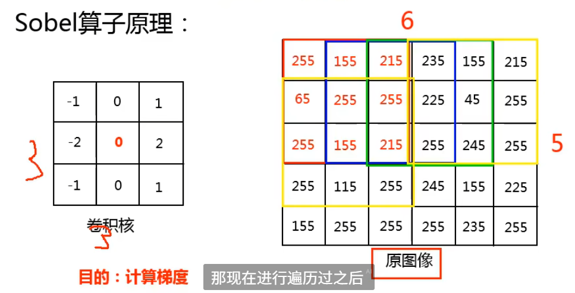
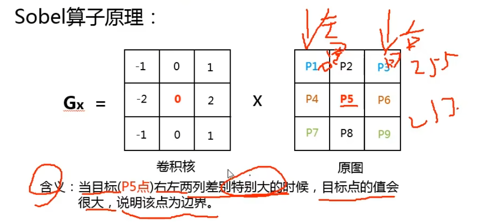
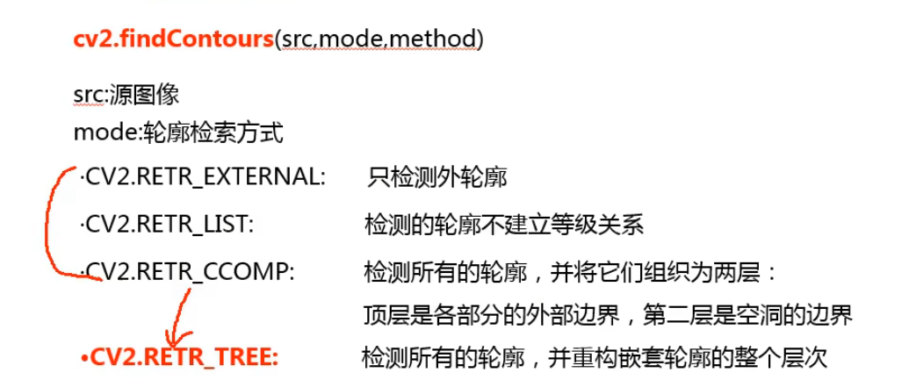

Week5
图像处理方法
一、Sobel算子
（一）什么是Sobel算子？
Sobel 算子是图像一种图像边缘
图像边缘检测重要算子之一
与梯度密度密不可分 -> 目的：图像边缘检测的方法，本质是==梯度运算==
（二）什么情况下会产生梯度？
利用 3 * 3 的卷积核放在二值图像中有三种位置关系，如下
全黑全白的像素值是相同的，只有在边缘部位时会有梯度产生。所有，梯度是进行边缘你检测的一个核心(边缘的梯度：255 - 0 = 255)
（三）Sobel 算子原理
遍历过程
- 卷积核顺序放到原图上

卷积核固定（中间列都是0）
卷积核中心位置在中间4x3区域内（对于边缘位置，卷积核暂时无法顾及到）
但是卷积核的核心无法顾及到原图像的边缘，如下
解决方法：
法一：边缘列（行）取均值或均值
法二（官方给的理论可能性）：paddng（边缘加一行 ”补0” ）
padding为0不改变原图像，此法可以顾及到每一个像素点
梯度计算
利用3 3 的卷积核与原图上顺序遍历的3 3矩阵（9个像素点）进行梯度计算，得到卷积核中心的梯度（包括 x 方向和 y 方向）
Sobel 算子本质上就是一个权值矩阵分布：越近的像素权值越高，类似高斯滤波
x 方向上的梯度
计算结果相当于
右边的 * 对应权值 - 左边的 * 对应权值梯度的本质

x 方向上梯度应该考虑的问题：
目标像素点求得的值小于0或者大于255怎么办？
Opencv默认的是截断的操作，即小于0按0算，大于255按255算
截断操作合适吗？
不合适，效果与实际差很大（eg.-200-1 < 0，结果取0）
应该如何操作？
对于小于0的取绝对值，大于255的可按255算（最大的极差了）
y 方向上的梯度计算
卷积核进行转置（3 * 3）
计算结果相当于
下边的 * 对应权值 - 上边的 * 对应权值
总梯度 及 简化梯度
二、x和y方向梯度计算及融合
（一）sobel 函数
1 | cv2.Sobel(src,depth,dx,du,ksize) |
- src: 源图像
- depth: 图像的深度【-1表示与源图像深度一致[表示截断]】[0, 255]
- [cv2.CV_64F: 保留负数部分]
- dx\du: x 和 y 方向的梯度
- ksize: 卷积核的大小【3, 5】
（二）depth = -1
源码
1
2
3
4
5sobelx = cv2.Sobel(img,-1,1,0,ksize=3)
sobely = cv2.Sobel(img,-1,0,1,ksize=3)
cv2.imshow('img', img)
cv2.imshow('sobelx', sobelx)
cv2.imshow('sobely', sobely)效果图（边界）
sobelx 的结果为
右 - 左，即255 - 0 = 255（左边边界部分为白色，但是右边边界为0 - 255 < 0，根据深度设定为-1自动截断变为0，即黑色），同理，sobely为下 - 上，结果显示上半边界圆
（三）depth = cv2.CV_64F
源码
1
2
3
4
5sobelx = cv2.Sobel(img,cv2.CV_64F,1,0,ksize=3)
# 将负数转化为整数【绝对值函数】
sobelx = cv2.convertScaleAbs(sobelx)
cv2.imshow('img', img)
cv2.imshow('sobelx', sobelx)效果

注意：如果没有将负数转化为整数【绝对值函数】（即代码中没有
sobelx = cv2.convertScaleAbs(sobelx))，会造成以下后果毛刺：错误的数值映射会导致某些边缘区域出现随机亮斑或暗斑（看起来像噪声）。
边缘断裂：负梯度信息丢失，导致边缘不连续。
表现如下：
原因
Sobel 计算的是图像的梯度（导数），结果可能是 正数或负数：
正梯度：像素从左到右由暗变亮（如
[0, 0, 255]）。负梯度：像素从左到右由亮变暗（如
[255, 0, 0]）。
如果直接显示包含负数的
sobelx（cv2.CV_64F类型），OpenCV 的imshow()会尝试将数据强制转换为uint8（0-255），但负数会被错误处理：- 负值被截断为 0 或溢出（例如
-100可能变成156），导致像素值异常。
- 负值被截断为 0 或溢出（例如
（四）梯度融合
源码
1
2
3
4
5
6
7
8
9
10
11
12
13
14
15
16
17sobelx = cv2.Sobel(img,cv2.CV_64F,1,0,ksize=3)
# 将负数转化为整数【绝对值函数】
sobelx = cv2.convertScaleAbs(sobelx)
cv2.imshow('img', img)
cv2.imshow('sobelx', sobelx)
# 计算y方向的梯度
sobely = cv2.Sobel(img,cv2.CV_64F,0,1,ksize=3)
# 将负数转化为整数【绝对值函数】
sobely = cv2.convertScaleAbs(sobely)
cv2.imshow('sobely', sobely)
# addWeighted()
new_img = cv2.addWeighted(sobelx,0.5,sobely,0.5,0)
cv2.imshow('new_img', new_img)效果
最接近原图的边界
三、Sobel使用建议及实例
（一）建议
源码
1
2
3
4
5
6
7
8
9
10
11
12
13
14
15
16
17
18
19
20
21
22
23
24
25
26
27
28
29
30
31
32
33
34
35
36
37
38
39
40
41
42
43
44
45
46
47
48
49import cv2
img = cv2.imread(r"/home/jiax/workspace/Python Learning/Opencv-course/梯度运算/1.png", 0)
"""
cv2.Sobel(src,depth,dx,du,ksize)
src: 源图像
depth: 图像的深度【-1表示与源图像深度一致[表示截断]】[0, 255]
[cv2.CV_64F: 保留负数部分]
dx\du: x 和 y 方向的梯度
ksize: 卷积核的大小【3, 5】
"""
"""
sobelx = cv2.Sobel(img,-1,1,0,ksize=3)
sobely = cv2.Sobel(img,-1,0,1,ksize=3)
cv2.imshow('img', img)
cv2.imshow('sobelx', sobelx)
cv2.imshow('sobely', sobely)
"""
# 计算x方向的梯度
sobelx = cv2.Sobel(img,cv2.CV_64F,1,0,ksize=3)
# 将负数转化为整数【绝对值函数】
sobelx = cv2.convertScaleAbs(sobelx)
cv2.imshow('img', img)
cv2.imshow('sobelx', sobelx)
# 计算y方向的梯度
sobely = cv2.Sobel(img,cv2.CV_64F,0,1,ksize=3)
# 将负数转化为整数【绝对值函数】
sobely = cv2.convertScaleAbs(sobely)
cv2.imshow('sobely', sobely)
# addWeighted()
new_img = cv2.addWeighted(sobelx,0.5,sobely,0.5,0)
cv2.imshow('new_img', new_img)
"""
直接计算融合的x和y的梯度
"""
sobelxy = cv2.Sobel(img, cv2.CV_64F,1,1,ksize=3)
sobelxy = cv2.convertScaleAbs(sobelxy)
cv2.imshow('sobelxy',sobelxy)
cv2.waitKey(0)
cv2.destroyAllWindows()效果（直接计算融合的x和y的梯度，但是效果不如分开计算后再融合）
没取绝对值
取绝对值
（二）实例——轮廓检测
代码
1
2
3
4
5
6
7
8
9
10
11img = cv2.imread(r"/home/jiax/workspace/Python Learning/Opencv-course/color.jpg", 0)
# 计算x方向的梯度
sobelx = cv2.Sobel(img,cv2.CV_64F,1,0,ksize=3)
sobelx = cv2.convertScaleAbs(sobelx)
# 计算y方向的梯度
sobely = cv2.Sobel(img,cv2.CV_64F,0,1,ksize=3)
sobely = cv2.convertScaleAbs(sobely)
# addWeighted()
new_img = cv2.addWeighted(sobelx,0.5,sobely,0.5,0)
cv2.imshow('new_img', new_img)效果

四、拉普拉斯算子（Laplacian算子）
（一）拉普拉斯算子原理
是轮廓检测，也是梯度运算的算子之一
是 Sobel 算子的二阶导，卷积核和Sobel 算子不一样
能够检测 Sobel 算子无法检测到的非常细节的轮廓
但是同样能够检测噪声，即对噪声比较敏感，所以一般不会单独使用Laplacian算子
直接计算P5点（核心点）的梯度，没必要再计算x方向和y方向的梯度再进行融合
（二）代码演示
源码
1
2
3
4
5
6
7
8
9
10
11
12
13
14
15
16
17
18
19
20
21
22
23
24"""
拉普拉斯算子:
问题: 对噪音比较敏感, 一般不单独使用
"""
import cv2
# img = cv2.imread(r"/home/jiax/workspace/Python Learning/Opencv-course/梯度运算/1.png", 0)
img = cv2.imread(r"/home/jiax/workspace/Python Learning/Opencv-course/color.jpg", 0)
"""
cv2.Laplacian(src,depth):
src: 源图像
depth:图像深度【-1表示与源图像深度一致】
cv2.CV_64F: 表示保留负值部分
"""
new_img = cv2.Laplacian(img,cv2.CV_64F)
new_img = cv2.convertScaleAbs(new_img)
cv2.imshow('img', img)
cv2.imshow('new_img', new_img)
cv2.waitKey(0)
cv2.destroyAllWindows()效果
- 像素点对于噪音非常敏感，故而得到的结果整体上来看缺失很多
五、算子总结
Sobel 算子和 Scharr 算子需要算分别 x 和 y ，它们的本质差别在于中心像素点附近的权值不一样，导致Scarr算子能够得到细微的轮廓
拉普拉斯算子不需要算 x 和 y 因为太精细了，甚至于会将噪声当作轮廓提前，所以一般不使用它
三个算子的本质区别就是卷积核不一样
六、Canny边缘检测原理
（一）边缘检测步骤
应用高斯滤波器，以平滑图像，滤除噪声。【降噪】
计算图像中每个像素点的梯度大小（各种算子）和方向。【梯度】
使用非极大值抑制，消除和边缘检测带来的不利影响（滤除干扰）。【非极大值检测】

应用双阈值检测确定真实和潜在的边缘（消除假边缘）。【双阈值检测】
通过抑制孤立的弱边缘（假边缘）完成边缘检测。【完成检测】

（二）完成Canny边缘检测
代码
1
2
3
4
5
6
7
8
9
10
11
12
13
14
15
16
17
18
19
20import cv2
img = cv2.imread(r'/home/jiax/workspace/Python Learning/Opencv-course/gray.jpg', 0)
"""
cv.Canny(src,min,max) 双阈值检测
src: 源图像
min: 最小阈值
max: 最大阈值
"""
new_img = cv2.Canny(img,100,200)
new_img1 = cv2.Canny(img,80,200)
cv2.imshow('img', img)
cv2.imshow('new_img', new_img)
cv2.imshow('new_img1', new_img1)
cv2.waitKey(0)
cv2.destroyAllWindows()效果

关键在于阈值的确定，可以根据阈值的确定来指定需要的边界
七、图像金字塔原理解析
（一）什么是图像金字塔
- level0：原始图片
（二）图像金字塔的目的
（三）高斯金字塔
沿着箭头方向图像做如下操作，依次得到每层图像
向下采样（必然有信息的丢失）

向上采样
八、拉普拉斯金字塔
由高斯金字塔变换得到的
图像先缩小，再放大，再相减，循环操作一次得到各个层图像
九、图像轮廓检测
（一）边缘和轮廓辨析
- 边缘检测能够检测出边缘，但是边缘是不连续的。
- 将边缘连接成一个整体，构成轮廓。
（二）图像轮廓检测中注意的问题
对象是二值图像，所以需要进行阈值分割。
在Opencv中，背景必须是黑色的，对象必须是白色的。
因为自动从黑色背景中找白色的轮廓。
（三）查找图像轮廓函数
函数主体

函数返回值（三个）
（四）轮廓绘制函数
十、使用Python完成轮廓检测
代码
1
2
3
4
5
6
7
8
9
10
11
12
13
14
15
16
17
18
19
20
21
22
23
24
25
26
27
28
29
30
31import cv2
# 读取彩色图片
img = cv2.imread(r"/home/jiax/workspace/Python Learning/Opencv-course/梯度运算/color.png",1)
# 将彩色图片转化为灰度图
gray = cv2.cvtColor(img, cv2.COLOR_BGR2GRAY)
# 将灰度图转化为二值图
ret,binary = cv2.threshold(gray,127,255,cv2.THRESH_BINARY)
# 寻找图像的轮廓
"""
由于opencv版本的原因:
2 -> cv2.findContours 两个返回值(contours,hie)
3 -> cv2.findContours 三个返回值(img,contours,hie)
4 -> cv2.findContours 两个返回值(contours,hie)
"""
contours,hie = \
cv2.findContours(binary,cv2.RETR_TREE,cv2.CHAIN_APPROX_NONE)
# 对原始图像进行复制
draw_img = img.copy()
# 绘制轮廓
new_img = cv2.drawContours(draw_img, contours, -1, (0,0,255), 2)
cv2.imshow("img", img)
cv2.imshow("new_img", new_img)
cv2.waitKey(0)
cv2.destroyAllWindows()效果
注意点：
为什么要将彩色图片先转化成灰度图，如下
1
2
3
4
5
6# 读取彩色图片
img = cv2.imread(r"/home/jiax/workspace/Python Learning/Opencv-course/梯度运算/color.png",1)
# 将彩色图片转化为灰度图
gray = cv2.cvtColor(img, cv2.COLOR_BGR2GRAY)
# 将灰度图转化为二值图
ret,binary = cv2.threshold(gray,127,255,cv2.THRESH_BINARY)答：在二维的灰度图（new_img 是 灰度图 img 的副本）上绘制BGR三通道的彩色轮廓是不可能的。如果是灰度图的话需要用彩色图片的读取方式（1）读取，然后依次转化
由于opencv版本的原因:
2->cv2.findContours两个返回值(contours,hie)3->cv2.findContours三个返回值(img,contours,hie)4->cv2.findContours两个返回值(contours,hie)为什么要对 img 进行复制
new_img = cv2.drawContours(draw_img, contours, -1, (0,0,255), 2)会对传入的src同时进行修改，改变原始图像，而此刻的img需要呈现出来与结果对比，不可改变
十一、图像均衡化原理
（一）直方图
直方图做了什么事情 ？
直方图进行了像素点个数的统计
绘制直方图的目的是什么？
图像的均衡化处理
（二）什么是均衡化？
- 将尖瘦的直方图平均一些，变为宽胖的直方图
- 本质：平衡图像矩阵内的元素
（三）如何均衡化？
- 统计灰度图原始像素点各灰度值个数并分别计算比例
- 根据累计比例（从前往后加）调整灰度值（累计比例 * 255 并取整）
- 最后将处理后的灰度值回填到相应像素点